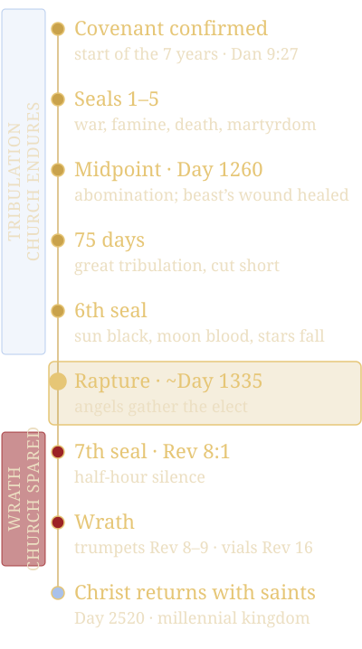
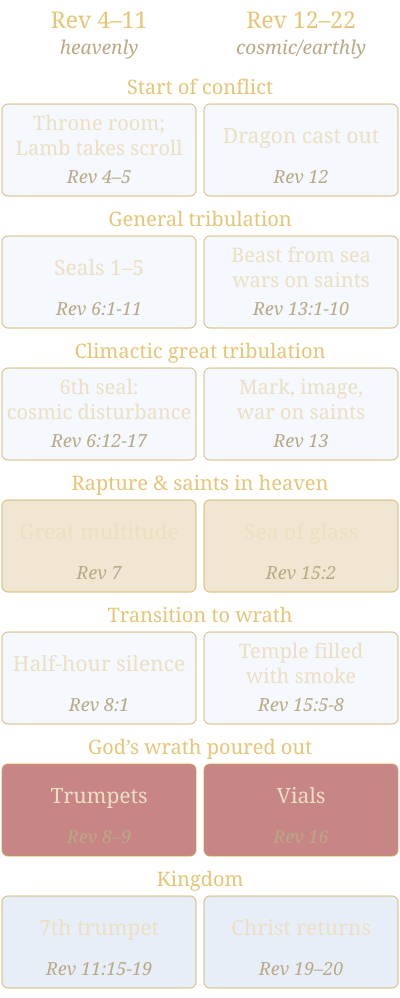

Post-Tribulation, Pre-Wrath Eschatological Timeline
Based on a 7-Year Framework with a 75-Day Climactic Great Tribulation
✦ ✦ ✦Use the arrow keys or swipe to move. Tap any reference to read the verse.
A post-tribulation, pre-wrath view
This document synthesizes a post-tribulation, pre-wrath rapture view of end-times events, grounded in a plain reading of the King James Version (KJV) scriptures. The timeline spans a 7-year period (Daniel’s “one week”), divided into approximately 3.5 years of general tribulation, a 75-day climactic great tribulation, and a period of God’s wrath, culminating in Christ’s return with glorified saints to establish the millennial kingdom.
The Book of Revelation is structured as two parallel accounts (chapters 4-11 and 12-22) of the same events, with tribulation in Revelation 6-7 and 13, and wrath in the trumpets (Revelation 8-9) and vials (Revelation 16). This view refutes pre-tribulationism’s conflation of tribulation and wrath and its invention of “tribulation saints,” affirming the church’s presence during tribulation.
Overview of the Timeline
- 7-Year Framework: Derived from ’s “one week,” split at the midpoint by the abomination of desolation and the beast’s deadly wound/healing.
Key Periods:
First 3.5 Years (~1260 days)
General tribulation (natural and manmade trials, beast’s rise).
75 Days
Climactic great tribulation, post-abomination and beast’s wound/healing, marked by the beast’s head wound, dragon empowerment, and intense persecution, “cut short” for the elect (’s 1290-1335 days).
Wrath Period
Post-rapture, God’s judgments (trumpets and vials) on the beast’s kingdom while the beast continues his full 42-month reign, followed by Christ’s return with saints.
The rapture, and Revelation’s structure
- Rapture: Occurs post-tribulation at Christ’s visible second coming (), after the 75-day climax (~Day 1335, 75 days after the abomination), before wrath.
- Revelation’s Structure: Chapters 4-11 (heavenly perspective) and 12-22 (cosmic/earthly perspective) overlap, with tribulation in Revelation 6-7 and 13, rapture in and , and wrath in Revelation 8-9 and 16.
The order of events

First 3.5 Years: General Tribulation
Description: The 7-year period begins with a covenant, likely involving Israel, initiating tribulation—natural and manmade trials including wars, famines, and persecution. The beast rises, setting the stage for its dominance. The church endures these trials, refuting pre-tribulationism’s early rapture.
Key Events:
- Covenant confirmed, starting the 7 years.
- Wars, famines, and death afflict the world (Revelation’s early seals).
- Believers face persecution; the beast gains influence.
The covenant for one week
And he shall confirm the covenant with many for one week: and in the midst of the week he shall cause the sacrifice and the oblation to cease, and for the overspreading of abominations he shall make it desolate, even until the consummation, and that determined shall be poured upon the desolate.Daniel 9:27
The covenant marks the 7-year start, with the midpoint (~1260 days) pivotal.
The first four seals
And I saw when the Lamb opened one of the seals, and I heard, as it were the noise of thunder, one of the four beasts saying, Come and see. And I saw, and behold a white horse: and he that sat on him had a bow; and a crown was given unto him: and he went forth conquering, and to conquer. And when he had opened the second seal, I heard the second beast say, Come and see. And there went out another horse that was red: and power was given to him that sat thereon to take peace from the earth, and that they should kill one another: and there was given unto him a great sword. And when he had opened the third seal, I heard the third beast say, Come and see. And I beheld, and lo a black horse; and he that sat on him had a pair of balances in his hand. And I heard a voice in the midst of the four beasts say, A measure of wheat for a penny, and three measures of barley for a penny; and see thou hurt not the oil and the wine. And when he had opened the fourth seal, I heard the voice of the fourth beast say, Come and see. And I looked, and behold a pale horse: and his name that sat on him was Death, and Hell followed with him. And power was given unto them over the fourth part of the earth, to kill with sword, and with hunger, and with death, and with the beasts of the earth.Revelation 6:1-8
The first four seals depict tribulation’s trials (war, famine, death).
Ye shall be hated
And ye shall hear of wars and rumours of wars: see that ye be not troubled: for all these things must come to pass, but the end is not yet. For nation shall rise against nation, and kingdom against kingdom: and there shall be famines, and pestilences, and earthquakes, in divers places. All these are the beginning of sorrows. Then shall they deliver you up to be afflicted, and shall kill you: and ye shall be hated of all nations for my name’s sake.Matthew 24:6-9
Believers endure tribulation.
Why: The church’s presence (, “ye”) and seals’ trials (Revelation 6) define tribulation as distinct from wrath. Pre-tribulationism’s claim that the church is absent ignores these scriptures.
Midpoint: Abomination of Desolation and Beast’s Empowerment
Description: At the 7-year midpoint, the beast breaks the covenant, halts sacrifices, and sets up the abomination of desolation, triggering the great tribulation. The beast suffers a deadly head wound, is healed (possibly empowered/possessed by the dragon), and begins its 42-month reign, intensifying persecution.
Key Events:
- Abomination of desolation desecrates the temple.
- Beast’s head wound is healed, gaining global worship.
- Dragon empowers the beast, starting its 42-month authority.
The abomination of desolation
When ye therefore shall see the abomination of desolation, spoken of by Daniel the prophet, stand in the holy place, (whoso readeth, let him understand:)Matthew 24:15
For then shall be great tribulation, such as was not since the beginning of the world to this time, no, nor ever shall be.Matthew 24:21
The church (“ye”) faces great tribulation.
- The abomination marks the midpoint.
- This parallels the abomination.
The deadly wound healed
And the beast which I saw was like unto a leopard, and his feet were as the feet of a bear, and his mouth as the mouth of a lion: and the dragon gave him his power, and his seat, and great authority. And I saw one of his heads as it were wounded to death; and his deadly wound was healed: and all the world wondered after the beast. And they worshipped the dragon which gave power unto the beast: and they worshipped the beast, saying, Who is like unto the beast? who is able to make war with him? And there was given unto him a mouth speaking great things and blasphemies; and power was given unto him to continue forty and two months.Revelation 13:2-5
The wound and dragon’s power () initiate the beast’s reign.
Why: The abomination () and beast’s wound () trigger great tribulation, with saints present (, ). Pre-tribulationism’s early rapture contradicts this.
75 Days: Climactic Great Tribulation
Description: The great tribulation’s climax, a 75-day period post-abomination and beast’s wound, is the most intense phase of persecution, “cut short” for the elect. The beast enforces the mark and image worship, warring against saints, until cosmic signs herald Christ’s return and the rapture. The 75 days derive from ’s 1290-1335 days.
Key Events:
- Beast enforces mark and image worship, persecuting saints.
- Great tribulation “cut short” to preserve the elect.
- Cosmic signs (sun darkened, stars fall) signal tribulation’s end.
- Rapture at Christ’s visible second coming (~Day 1335).
The 1290 and 1335 days
And from the time that the daily sacrifice shall be taken away, and the abomination that maketh desolate set up, there shall be a thousand two hundred and ninety days. Blessed is he that waiteth, and cometh to the thousand three hundred and five and thirty days.Daniel 12:11-12
The 1290 days fall within the 75 days; the 1335 days mark their end and the rapture.
War with the saints
And it was given unto him to make war with the saints, and to overcome them: and power was given him over all kindreds, and tongues, and nations.Revelation 13:7
And he had power to give life unto the image of the beast, that the image of the beast should both speak, and cause that as many as would not worship the image of the beast should be killed. And he causeth all, both small and great, rich and poor, free and bond, to receive a mark in their right hand, or in their foreheads: And that no man might buy or sell, save he that had the mark, or the name of the beast, or the number of his name.Revelation 13:15-17
The beast’s persecution peaks.
Those days shortened
And except those days should be shortened, there should no flesh be saved: but for the elect’s sake those days shall be shortened.Matthew 24:22
For there shall arise false Christs, and false prophets, and shall shew great signs and wonders; insomuch that, if it were possible, they shall deceive the very elect.Matthew 24:24
The tribulation is cut short, with the elect present.
The sixth seal
And I beheld when he had opened the sixth seal, and, lo, there was a great earthquake; and the sun became black as sackcloth of hair, and the moon became as blood; And the stars of heaven fell unto the earth, even as a fig tree casteth her untimely figs, when she is shaken of a mighty wind. And the heaven departed as a scroll when it is rolled together; and every mountain and island were moved out of their places. And the kings of the earth, and the great men, and the rich men, and the chief captains, and the mighty men, and every bondman, and every free man, hid themselves in the dens and in the rocks of the mountains; And said to the mountains and rocks, Fall on us, and hide us from the face of him that sitteth on the throne, and from the wrath of the Lamb: For the great day of his wrath is come; and who shall be able to stand?Revelation 6:12-17
Cosmic signs match .
Immediately after the tribulation
Immediately after the tribulation of those days shall the sun be darkened, and the moon shall not give her light, and the stars shall fall from heaven, and the powers of the heavens shall be shaken: And then shall appear the sign of the Son of man in heaven: and then shall all the tribes of the earth mourn, and they shall see the Son of man coming in the clouds of heaven with power and great glory. And he shall send his angels with a great sound of a trumpet, and they shall gather together his elect from the four winds, from one end of heaven to the other.Matthew 24:29-31
The rapture occurs post-tribulation.
Out of great tribulation
After this I beheld, and, lo, a great multitude, which no man could number, of all nations, and kindreds, and people, and tongues, stood before the throne, and before the Lamb, clothed with white robes, and palms in their hands; And cried with a loud voice, saying, Salvation to our God which sitteth upon the throne, and unto the Lamb. And all the angels stood round about the throne, and about the elders and the four beasts, and fell before the throne on their faces, and worshipped God, Saying, Amen: Blessing, and glory, and wisdom, and thanksgiving, and honour, and power, and might, be unto our God for ever and ever. Amen. And one of the elders answered, saying unto me, What are these which are arrayed in white robes? and whence came they? And I said unto him, Sir, thou knowest. And he said to me, These are they which came out of great tribulation, and have washed their robes, and made them white in the blood of the Lamb.Revelation 7:9-14
The multitude is raptured post-tribulation.
On the sea of glass
And I saw as it were a sea of glass mingled with fire: and them that had gotten the victory over the beast, and over his image, and over his mark, and over the number of his name, stand on the sea of glass, having the harps of God.Revelation 15:2
These saints, post-75 days, parallel Revelation 7’s multitude.
Why: The 75-day climax () aligns with the beast’s persecution () and cosmic signs (), ending with the rapture (). The church’s presence refutes pre-tribulationism, as saints endure the mark and deception (). Revelation’s parallel accounts place this in both 6-7 and 13-15. The beast’s full 42-month reign continues through the subsequent wrath period.
Half Hour of Silence: Transition to Wrath
Description: After the rapture, a brief pause in heaven marks the shift from tribulation to God’s wrath, as the seventh seal is opened.
Key Event:
- Silence in heaven, preparing for judgments.
And when he had opened the seventh seal, there was silence in heaven about the space of half an hour.Revelation 8:1
Why: The silence follows the sixth seal’s rapture (), distinguishing tribulation from wrath. The church, now raptured, is spared wrath ().
Wrath: Trumpets and Vials
Description: God’s wrath, post-rapture, targets the beast’s kingdom via trumpets and vials, which are parallel judgments in Revelation’s two accounts (4-11 and 12-22). The beast and his followers endure these supernatural judgments.
Key Events:
- Trumpets afflict the earth (third part affected).
- Vials intensify judgments (universal scope).
- Beast’s kingdom suffers, gathers for Armageddon.
The first trumpet and the first vial
The first angel sounded, and there followed hail and fire mingled with blood, and they were cast upon the earth: and the third part of trees was burnt up, and all green grass was burnt up.Revelation 8:7
And the first went, and poured out his vial upon the earth; and there fell a noisome and grievous sore upon the men which had the mark of the beast, and upon them which worshipped his image.Revelation 16:2
The beast’s kingdom
And the fifth angel poured out his vial upon the seat of the beast; and his kingdom was full of darkness; and they gnawed their tongues for pain,Revelation 16:10
And I saw three unclean spirits like frogs come out of the mouth of the dragon, and out of the mouth of the beast, and out of the mouth of the false prophet. For they are the spirits of devils, working miracles, which go forth unto the kings of the earth and of the whole world, to gather them to the battle of that great day of God Almighty.Revelation 16:13-14
Not appointed to wrath
For God hath not appointed us to wrath, but to obtain salvation by our Lord Jesus Christ,1 Thessalonians 5:9
Why: Trumpets and vials, as parallel wrath (Revelation 8-9, 16), follow the rapture, targeting the beast’s followers (). The church’s absence during wrath aligns with the tribulation/wrath distinction, refuting pre-tribulationism’s conflation. The beast continues his reign throughout this period.
Christ’s Return with Glorified Saints and Millennial Kingdom
Description: After wrath, Christ returns with glorified saints (raptured earlier) to defeat the beast and false prophet, bind Satan, and establish the 1,000-year kingdom.
Key Events:
- Christ returns with saints, defeats the beast.
- Beast and false prophet cast into the lake of fire.
- Satan bound for 1,000 years.
- Millennial kingdom established.
The armies which were in heaven
And I saw heaven opened, and behold a white horse; and he that sat upon him was called Faithful and True, and in righteousness he doth judge and make war. His eyes were as a flame of fire, and on his head were many crowns; and he had a name written, that no man knew, but he himself. And he was clothed with a vesture dipped in blood: and his name is called The Word of God. And the armies which were in heaven followed him upon white horses, clothed in fine linen, white and clean.Revelation 19:11-14
And the beast was taken, and with him the false prophet that wrought miracles before him, with which he deceived them that had received the mark of the beast, and them that worshipped his image. These both were cast alive into a lake of fire burning with brimstone.Revelation 19:20
Bound a thousand years
And I saw an angel come down from heaven, having the key of the bottomless pit and a great chain in his hand. And he laid hold on the dragon, that old serpent, which is the Devil, and Satan, and bound him a thousand years, And cast him into the bottomless pit, and shut him up, and set a seal upon him, that he should deceive the nations no more, till the thousand years should be fulfilled: and after that he must be loosed a little season. And I saw thrones, and they sat upon them, and judgment was given unto them: and I saw the souls of them that were beheaded for the witness of Jesus, and for the word of God, and which had not worshipped the beast, neither his image, neither had received his mark upon their foreheads, or in their hands; and they lived and reigned with Christ a thousand years. But the rest of the dead lived not again until the thousand years were finished. This is the first resurrection. Blessed and holy is he that hath part in the first resurrection: on such the second death hath no power, but they shall be priests of God and of Christ, and shall reign with him a thousand years.Revelation 20:1-6
- This parallels Revelation 19 in the 4-11 account.
Why: Christ’s return with saints (Revelation 19) follows wrath, fulfilling the kingdom’s establishment (, ). The church, raptured post-tribulation, returns glorified, aligning with this view.
Refutation of Pre-Tribulationism
This timeline counters pre-tribulationism’s errors:
Church’s Presence
Saints endure tribulation (, ), facing the beast’s mark and abomination, contradicting an early rapture.
Visible Rapture
The rapture at Christ’s second coming (, ) is visible (), not secret.
Tribulation vs. Wrath
Tribulation (persecution, disasters) is distinct from wrath (God’s judgments), with the church enduring the former (Revelation 6-7, 13) but spared the latter (Revelation 8-9, 16).
No Invented Doctrines
“Saints” (, ) are the church, not a separate “tribulation saints” group, aligning with a plain reading.
Conclusion
This post-tribulation, pre-wrath timeline, rooted in Daniel’s 7-year framework and Revelation’s parallel accounts, places the church in tribulation (3.5 years, 75-day climax), raptured at Christ’s visible second coming (~Day 1335), spared wrath (trumpets/vials), and returning with Christ to establish the millennium.
The 75-day climactic great tribulation, post-abomination and beast’s wound, is a pivotal period of intense persecution, cut short for the elect.
Chronological Timeline: tribulation
Chronological Timeline: rapture and wrath
Pronoun Usage and Timing Clauses in the Olivet Discourse
The table below analyzes key verses from the Olivet Discourse, focusing on timing clauses (e.g., “before,” “then,” “after,” “immediately after,” “in those days”) and pronoun shifts (“ye/you/your” for believers Jesus addresses directly vs. “they/them” for unbelieving world/Jews or general unbelievers). This supports the premise:
- Believers (“ye”) endure general tribulation (beginning of sorrows) and the climactic great tribulation (post-abomination, cut short).
- The rapture gathers the elect immediately after this tribulation.
- Unbelievers (“they”) face ongoing wrath/judgment post-rapture (beast’s reign continues, but church is spared).
Olivet Discourse: the beginning of sorrows
Beginning phase (before the end). “Ye” (believers addressed)
General tribulation (first 3.5 years): Church endures wars, famines, earthquakes as “beginning of sorrows.”“Then” (after beginning of sorrows). Luke: “before all these” (persecution precedes some signs). Shift: “They” deliver/persecute; “you/ye” (believers) are victims
General tribulation: Believers persecuted/hated; church present and enduring.“When ye shall see” (midpoint trigger). “Ye” (believers see and respond)
Midpoint: Abomination triggers climactic great tribulation; believers witness it and are instructed to flee.Olivet Discourse: great tribulation
“Then” / “For in those days” (immediately post-abomination). Luke: “This people” (unbelieving Jews); general affliction
Climactic great tribulation (75 days): Intense phase begins; Luke highlights wrath/vengeance on unbelieving Israel (“days of vengeance”).Shortening of “those days.” “The elect” (believers)
Climactic great tribulation cut short (~75 days via Daniel 12); preserves believers for rapture.During great tribulation. “They” (false prophets deceive); “the very elect” (believers protected)
Church (“elect”) present during deception but not deceived.Olivet Discourse: after that tribulation
“Immediately after” / “after that tribulation” / “those things which are coming on the earth.” “Men’s hearts” / general fear (unbelievers)
End of climactic great tribulation: Cosmic signs; unbelievers (“they/men”) terrified as wrath approaches.“Immediately after… And then” / “And then shall they see.” Shift: “All the tribes… they” mourn/see (unbelievers); angels gather “his elect” / “your redemption” (believers)
Rapture at visible second coming: Unbelievers mourn; elect (church/believers) gathered/raptured post-tribulation, pre-full wrath.“In those days” (great tribulation/wrath overlap for unbelievers). “This people… they” (unbelieving Jews)
Supports distinction: Unbelieving Israel endures “days of vengeance”/wrath (beast’s persecution continues post-rapture).What the Olivet table shows
This table demonstrates how Jesus’ timing clauses sequence events into general tribulation → midpoint trigger → shortened climactic great tribulation → immediate cosmic signs/rapture.
Pronoun shifts consistently address believers (“ye/you”) for endurance and deliverance, while “they/them” describes unbelievers (especially unbelieving Jews in context) facing mourning, fear, and vengeance. Supporting the view that the church/believer endures tribulation but is raptured pre-wrath, with the beast’s reign persisting against the unsaved through the wrath.
Parallel Structure of Revelation
Revelation uses recapitulation: the same timeline is repeated from heavenly (4-11) and cosmic/earthly (12-22) perspectives. The rapture is at the sixth seal (), with saints immediately appearing in heaven (, paralleled in ).

Heavenly Introduction / Start of Conflict
Rev 4-5 (Heavenly Perspective)
Throne room; Lamb worthy to open scroll. Details (; ): Door open in heaven; Lamb takes scroll; worship.
Rev 12 (Cosmic/Earthly Perspective)
Dragon, woman, child, war in heaven. Details (): Woman clothed with sun; dragon cast out; rejoicing in heaven.
Overlap: Heavenly authority given; cosmic war begins as Satan is cast down.
Key cross-references: (throne, books opened); .
General Tribulation (Beginning of Sorrows)
Rev 6:1-11: Seals 1-5 opened
White (conquest), Red (war), Black (famine), Pale (death) horses; martyrs under altar ().
Rev 13:1-10: Beast from sea rises, wars on saints
Beast with heads/horns; authority 42 months; overcomes saints.
Overlap: Man/Satan-driven trials: wars, famine, death, persecution; church endures.
Key cross-references: (wars, famines); ; .
Midpoint Trigger & Climactic Great Tribulation
Rev 6:12-17: 6th Seal – Cosmic disturbance
Earthquake; sun black, moon blood, stars fall; kings hide from “wrath of the Lamb.”
Rev 13: Beast fully empowered; mark, image, persecution
Beast’s wound healed; dragon gives power; war on saints; mark 666 enforced.
Overlap: Abomination/beast empowerment triggers intense persecution (“cut short” for elect); cosmic signs end this phase.
Key cross-references: (abomination); , ; (1290/1335 days).
Rapture & Saints in Heaven
Rev 7:1-17: Multitude from great tribulation before throne
144,000 sealed; great multitude from all nations; God wipes away tears.
Rev 15:2: Victors over beast on sea of glass
Details (): Sea of glass mingled with fire; harps; song of Moses/Lamb.
Overlap: Raptured church safe in heaven post-tribulation; victory over beast/mark.
Key cross-references: ; ; .
Transition to Wrath
Rev 8:1: Half-hour silence when 7th seal opened
Silence in heaven about half an hour.
Implicit transition after victors appear in heaven
Details (): Temple filled with smoke; no man enters till plagues finished.
Overlap: Brief heavenly pause before judgments begin.
God’s Wrath Poured Out
Rev 8-9: Trumpets – Partial judgments
Hail/fire, sea blood, waters bitter (thirds affected); locusts/demonic army.
Rev 16: Vials – Intensified/universal judgments
Sores on mark-bearers, sea/rivers blood, darkness on kingdom, Armageddon gathered.
Overlap: Parallel wrath: Trumpets affect thirds (partial); vials full/universal on beast’s kingdom.
Key cross-references: ; , (target mark-bearers); .
Kingdom Proclaimed / Established
Rev 11:15-19: 7th trumpet – Kingdom comes
Kingdoms become Christ’s; reward saints, destroy destroyers.
Rev 19-20: Christ returns, beast defeated, millennium
White horse return; beast to lake of fire; Satan bound; saints reign 1000 years.
Overlap: Final victory; kingdom established.
Key cross-references: ; ; // Revelation 19.
This detailed table reinforces the parallel structure: same events (tribulation → rapture → wrath → kingdom), different angles. The church endures tribulation (Rev 6 seals / Rev 13 beast) but is raptured at the sixth seal before wrath (Rev 8+ trumpets // Rev 16 vials).
Trumpets and Vials as Parallel Judgments in Revelation
The trumpets (Rev 8–9) and vials/bowls (Rev 16) are parallel descriptions of the same wrath judgments from different perspectives:
- Trumpets: Heavenly viewpoint, partial/limited scope (often “a third” affected), emphasizing warning and opportunity for repentance (though none repent, ).
- Vials: Earthly/cosmic viewpoint, intensified/universal scope, poured out on the beast’s kingdom and mark-bearers specifically.
This supports the overlapping structure (Rev 4-11 heavenly // Rev 12-22 earthly), with wrath post-rapture targeting the ungodly while the church is absent.
Seven trumpets, seven vials
| Trumpet (Rev 8–9) | Vial/Bowl (Rev 16) |
|---|---|
| 1st · Rev 8:7 – Hail and fire mingled with blood | 1st · Rev 16:2 – Noisome and grievous sore |
| 2nd · Rev 8:8-9 – Great mountain burning with fire cast into sea | 2nd · Rev 16:3 – Vial poured into sea |
| 3rd · Rev 8:10-11 – Great star (Wormwood) falls, burns | 3rd · Rev 16:4-7 – Vial into rivers and fountains |
| 4th · Rev 8:12 – Heavens smitten | 4th · Rev 16:8-9 – Vial upon the sun |
| 5th · Rev 9:1-12 – Star falls, opens bottomless pit; locusts torment | 5th · Rev 16:10-11 – Vial upon throne of beast |
| 6th · Rev 9:13-21 – Four angels loosed at Euphrates; 200M horsemen | 6th · Rev 16:12-16 – Vial upon Euphrates |
| 7th · Rev 11:15-19 – Great voices: kingdoms become Christ’s | 7th · Rev 16:17-21 – Vial into air; “It is done” |
The 1st trumpet and vial
Trumpet ·
Burns a third of trees, all green grass.
Vial ·
Sores on men who have the mark of the beast and worship his image.
Parallel: Earth afflicted (vegetation burned // sores on beast followers).
Note: Targeted at beast system in vials.
The 2nd trumpet and vial
Trumpet ·
Third of sea becomes blood; third of sea creatures die; third of ships destroyed.
Vial ·
Sea becomes blood as of a dead man; every living soul in sea dies.
Parallel: Sea turned to blood (partial // total).
Note: Escalation from warning to full judgment.
The 3rd trumpet and vial
Trumpet ·
Third of rivers/fountains bitter; many men die from waters.
Vial ·
Rivers/fountains become blood; angel declares righteousness.
Parallel: Fresh waters poisoned/blood (partial // total).
Note: Judgment on water sources.
The 4th trumpet and vial
Trumpet ·
Third of sun, moon, stars darkened; third of day/night no light.
Vial ·
Sun scorches men with fire; men blaspheme God, repent not.
Parallel: Heavenly lights afflicted (partial darkening // intensified heat).
Note: Men gnaw tongues but do not repent.
The 5th trumpet and vial
Trumpet ·
Torment men without seal of God for 5 months (no death); like scorpions.
Vial ·
Kingdom full of darkness; men gnaw tongues for pain, blaspheme God.
Parallel: Darkness and torment (demonic locusts // darkness on beast throne).
Note: Pain without repentance; beast targeted.
The 6th trumpet and vial
Trumpet ·
Third of men killed by fire/smoke/brimstone; no repentance of idolatry/murder.
Vial ·
River dried for kings of east; unclean spirits gather to Armageddon.
Parallel: Euphrates involved; demonic gathering/armies (killing third // gathering for final battle).
Note: Preparation for Armageddon.
The 7th trumpet and vial
Trumpet ·
Temple opened, lightning, voices, earthquake, hail.
Vial ·
Voices, thunders, greatest earthquake, Babylon falls, great hail.
Parallel: Final consummation: kingdom proclaimed // great earthquake/hail, Babylon judged.
Note: ; parallels Rev 19-20 kingdom.
This parallelism shows trumpets as limited warnings (partial, heavenly focus) and vials as complete execution (universal, earthly focus on beast worshippers). Both occur post-rapture during the wrath period, with the beast active throughout (, ). No repentance in either (; , ). Supports —church spared wrath.
Tribulation, Rapture, Wrath, Kingdom
Same events (tribulation → rapture → wrath → kingdom), different angles.
✦ ✦ ✦- TribulationThe church endures tribulation (Rev 6 seals / Rev 13 beast).
- RaptureRaptured at Christ’s visible second coming.
- WrathSpared wrath (trumpets/vials).
- KingdomReturning with Christ to establish the millennium.